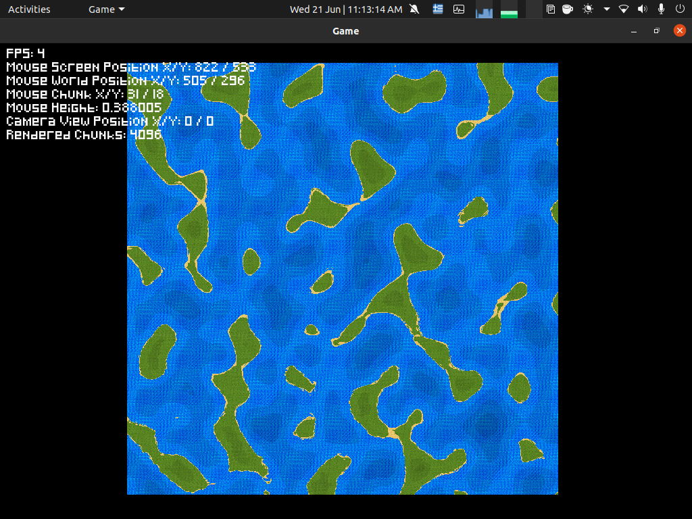
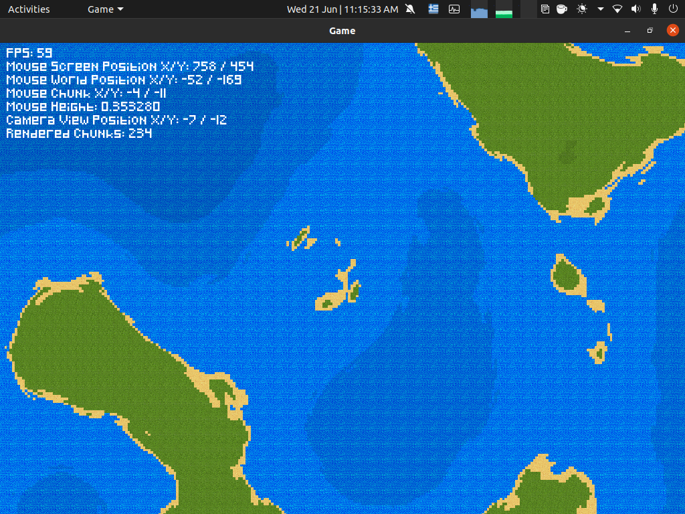

This is a project that started in 2020 while I was in High School. I'he since undated this project once in 2022 but I plan on making it a finished program.
The program has features like moving, zooming and displaying information to the user such as the frames per second(FPS) that the program manages to run, the position of the mouse on the screen and the generated world and the chunks(16x16 tiles) that are rendered.
The generated world is made of chunks and eatch chunk is made of 16x16 tiles of size 50px x 50px. This can be changed in the setup/init.h file. Using a perlin noise mathematical function, every tile of every chunk is assigned a value that represents it's height. The texture of eatch tile is then assigned based on the tile's height. In the init.h file there is a float waterLevel = 0.5, this can be changed to have more, or less, water on the world. Also to give a sense of the height of eatch tile, the texture is darkend to give the impresion of deep water or high terrain.
Eatch tile's height is the combination of many perlin noise functions with deferent seeds to give the generated world a more varied and realistic feel. That's why some locations have smooth coastlines and others are scrambled.
The world is generated at start and then saved to a multidimentional vector. This is not a finished project and there are many things to change!
 